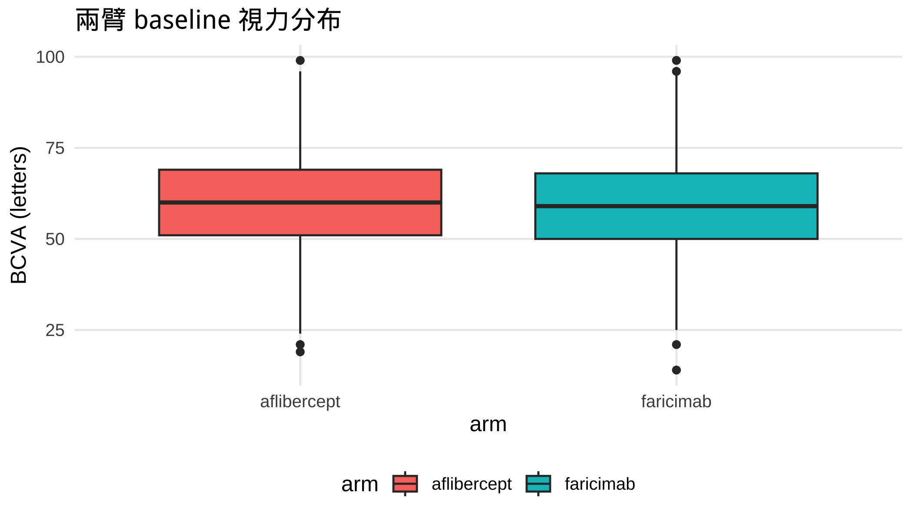

1 + 1[1] 23 * (4 + 5)[1] 27已經會寫 R 的人可以跳過這章。 這是給「這輩子沒打過一行 code」的醫師、研究助理的 30 分鐘暖身。 讀完你不會變成工程師，但看得懂本書每一段 參考程式碼 在做什麼、知道要改哪個參數——這就夠了。
想要「一頁速查」而不是教學？看 附錄 1 的 §F「ELI5：R / 程式」。
這堂工作坊的核心心法是：你不需要「會寫」R，只需要「看懂 + 改參數」。 真正的 code 教材都幫你準備好了（每個任務的「參考程式碼」），你的工作是讀懂它、必要時改個檔名或欄位名。這章就是讓你具備「讀懂」的最低門檻。
打開 RStudio（或 Posit.Cloud），畫面通常切成四塊：
| 區塊 | 位置 | 做什麼 |
|---|---|---|
| Source（編輯器） | 左上 | 寫、存 .R / .qmd 檔的地方（像 Word 的內文） |
| Console（主控台） | 左下 | 打一行、按 Enter、馬上看到結果（像計算機） |
| Environment | 右上 | 列出你現在手上有哪些「變數 / 資料」 |
| Files / Plots / Help | 右下 | 檔案總管、畫出來的圖、說明文件 |
最重要的觀念：你在 Console 打的東西「按 Enter 就執行」；在 Source 編輯器裡的 code 要選起來按 Ctrl/Cmd + Enter 才會送到 Console 執行。本書「參考程式碼」就是讓你複製到 Console（或 chunk）跑。
<- 把結果存起來在 Console 打 1 + 1 按 Enter：
1 + 1[1] 23 * (4 + 5)[1] 27左邊那個 [1] 不用管它，是「這是第 1 個結果」的意思。
要把一個結果「存起來等下用」，用 <-（指派符號，唸 gets）。把它想成「把右邊的東西，裝進左邊的盒子」：
n <- 1329 # 把數字 1329 裝進名叫 n 的盒子
n # 打盒子的名字 → 看裡面裝什麼[1] 1329drug <- "faricimab" # 文字要用引號 " " 包起來
drug[1] "faricimab"<- 在 RStudio 有快速鍵：Alt/Option + -（自動補空白）。用 = 也行，但 R 社群習慣 <-。
| 型別 | 長什麼樣 | 例子 |
|---|---|---|
| 數字 numeric | 就是數字 | 62、3.14、-5 |
| 文字 character | 一定要 " " 包住 |
"faricimab"、"PT-001" |
| 邏輯 logical | 只有兩種 | TRUE / FALSE |
缺失值 NA |
「這格沒資料」 | NA |
NA 很重要：真實病人資料一定有缺漏（病人沒回診、沒做 OCT）。R 用 NA 表示，而且對 NA 很敏感：
mean(c(60, 62, NA)) # 只要有一個 NA，結果就是 NA[1] NAmean(c(60, 62, NA), na.rm = TRUE) # 加 na.rm = TRUE：先把 NA 拿掉再算[1] 61c()c() 是「把好幾個東西串成一串」（c = combine）。臨床上你天天遇到「一串數字」（某病人的多次視力）：
bcva <- c(60, 64, 68, 70) # 一位病人第 0/4/8/12 週的視力
length(bcva) # 幾個數字？[1] 4mean(bcva) # 平均[1] 65.5max(bcva) - bcva[1] # 最大值 減 第 1 個值（bcva[1] = 取第 1 個）[1] 10bcva[1] 的中括號是「取第幾個」。bcva[1] 是第一個（60）。
函數 = 一台機器：吃材料、吐結果。 寫法是 機器名稱(材料)：
round(3.14159) # 四捨五入[1] 3round(3.14159, digits = 2) # digits = 2 是「具名引數」：要幾位小數[1] 3.14digits = 2 這種「名字 = 值」是 具名引數——你不用背順序，寫名字最清楚。?round 按 Enter，右下角 Help 會跳出說明。R 本身只有基本功能。強大的功能（畫圖、跑模型）放在套件裡。兩個動作別搞混：
install.packages("ggplot2") # 安裝：一台電腦只要做「一次」（像下載 App）
library(ggplot2) # 載入：每次新開 R session 都要做（像打開 App）本書要用的 20 多個套件，一行就能全裝好——在 Console 跑 source("START.R")（見 Part 1）。 裝過之後，每章開頭的 library(...) 負責「打開」它們。
「could not find function」這個錯誤，九成是忘了 library()——機器還沒打開就想用。
臨床資料就是表格：每列（row）一筆觀察、每欄（column）一個變項。R 把它叫 data frame（tidyverse 的加強版叫 tibble）。
我們直接讀本書的真實模擬資料（CSV 檔）來看：
library(readr) # read_csv 在這個套件裡
library(dplyr) # glimpse / 等下的動詞在這裡
baseline <- read_csv("data/faricimab_baseline.csv", show_col_types = FALSE)
glimpse(baseline) # 看有哪些欄位、型別、前幾筆值Rows: 1,329
Columns: 12
$ patient_id <chr> "P0001", "P0002", "P0003", "P0004", "P0005", "P0006", "P…
$ arm <chr> "faricimab", "aflibercept", "aflibercept", "faricimab", …
$ study <chr> "LUCERNE", "LUCERNE", "TENAYA", "LUCERNE", "TENAYA", "LU…
$ region <chr> "US-Canada", "US-Canada", "Rest-of-world", "Rest-of-worl…
$ age <dbl> 64, 83, 56, 73, 78, 60, 68, 81, 85, 80, 77, 79, 60, 76, …
$ sex <chr> "F", "M", "F", "F", "F", "F", "F", "F", "F", "M", "F", "…
$ bcva_baseline <dbl> 64, 79, 76, 73, 74, 46, 81, 55, 67, 45, 74, 71, 53, 69, …
$ cst_baseline <dbl> 300, 381, 290, 382, 381, 496, 240, 539, 328, 310, 378, 4…
$ irf_baseline <dbl> 0, 1, 0, 0, 1, 0, 1, 0, 0, 0, 0, 1, 1, 0, 0, 0, 0, 1, 1,…
$ srf_baseline <dbl> 1, 0, 0, 1, 0, 1, 0, 0, 1, 1, 0, 0, 1, 1, 0, 1, 1, 1, 1,…
$ bcva_strat <chr> "55-73", ">=74", ">=74", "55-73", ">=74", "<=54", ">=74"…
$ lld_strat <chr> ">=33", "<33", "<33", ">=33", "<33", "<33", "<33", "<33"…幾個天天用的「看一眼」函數：
head(baseline, 3) # 前 3 列# A tibble: 3 × 12
patient_id arm study region age sex bcva_baseline cst_baseline
<chr> <chr> <chr> <chr> <dbl> <chr> <dbl> <dbl>
1 P0001 faricimab LUCERNE US-Cana… 64 F 64 300
2 P0002 aflibercept LUCERNE US-Cana… 83 M 79 381
3 P0003 aflibercept TENAYA Rest-of… 56 F 76 290
# ℹ 4 more variables: irf_baseline <dbl>, srf_baseline <dbl>, bcva_strat <chr>,
# lld_strat <chr>nrow(baseline) # 幾列（幾個病人）[1] 1329names(baseline) # 有哪些欄位名 [1] "patient_id" "arm" "study" "region"
[5] "age" "sex" "bcva_baseline" "cst_baseline"
[9] "irf_baseline" "srf_baseline" "bcva_strat" "lld_strat" baseline$age # 用 $ 取「某一欄」→ 這裡取出 age 那一整欄 [1] 64 83 56 73 78 60 68 81 85 80 77 79 60 76 79 73 62 80
[19] 78 72 77 82 88 89 76 79 76 71 72 65 60 76 81 69 97 67
[37] 66 79 50 69 79 77 64 69 69 83 77 86 58 73 67 70 101 74
[55] 74 71 69 80 68 84 54 72 69 67 81 80 80 57 75 81 66 81
[73] 83 69 70 81 72 83 80 62 78 70 84 77 77 73 74 59 87 81
[91] 68 60 83 75 81 81 95 76 62 84 86 72 80 72 79 61 76 70
[109] 66 78 68 81 71 72 81 60 65 82 64 58 60 86 76 69 78 73
[127] 70 78 74 83 75 72 80 84 83 80 89 62 78 59 53 61 82 76
[145] 72 68 75 82 65 77 77 66 82 75 64 75 66 80 80 74 84 63
[163] 64 86 82 71 67 58 78 76 74 87 80 87 75 77 74 72 64 93
[181] 75 79 64 65 62 78 81 83 85 83 70 65 60 83 81 83 83 67
[199] 63 84 69 72 74 88 85 73 75 93 70 68 92 68 75 53 80 73
[217] 62 68 72 81 80 79 83 69 69 74 81 86 67 67 59 69 77 67
[235] 89 72 77 75 67 69 67 74 81 56 87 75 81 74 93 73 89 90
[253] 86 63 54 70 81 77 80 83 85 73 65 74 73 52 78 85 84 83
[271] 74 76 71 71 76 78 85 66 73 66 63 86 82 80 81 67 84 74
[289] 79 76 70 80 74 66 80 90 72 93 78 84 86 67 72 73 83 73
[307] 75 86 75 75 82 61 87 71 56 76 67 56 86 83 84 68 81 77
[325] 73 77 76 71 69 82 76 68 68 84 82 67 64 73 79 86 64 89
[343] 81 78 80 71 67 66 70 70 75 100 68 73 94 70 71 82 75 66
[361] 93 71 73 64 73 74 59 75 93 73 86 62 66 72 78 74 76 87
[379] 62 84 85 78 80 81 88 71 74 79 77 62 86 69 58 78 58 82
[397] 73 78 89 74 68 72 69 78 80 82 82 78 64 66 72 84 78 84
[415] 91 64 71 97 81 74 79 68 86 66 70 78 73 63 84 81 78 76
[433] 60 78 74 87 79 81 76 67 79 78 90 66 77 53 68 73 86 78
[451] 80 87 100 63 65 62 81 76 85 72 73 78 77 77 61 75 87 73
[469] 75 83 72 80 72 70 81 81 72 73 79 80 80 75 81 83 70 76
[487] 81 72 68 76 89 69 74 90 73 67 92 90 83 74 66 64 77 64
[505] 78 74 70 87 77 75 85 79 61 80 66 67 84 61 68 75 62 69
[523] 80 84 72 94 77 73 58 72 90 80 63 73 78 94 84 77 85 76
[541] 58 88 65 72 79 58 90 93 72 94 69 74 74 93 91 79 69 74
[559] 74 78 75 75 62 84 77 73 71 71 73 82 72 74 71 75 76 79
[577] 75 78 79 77 58 76 75 77 79 85 69 71 77 68 76 89 82 70
[595] 77 95 81 78 82 88 63 70 72 76 73 85 59 81 80 87 62 79
[613] 74 84 60 81 68 77 69 97 78 86 86 75 80 84 58 66 92 83
[631] 98 69 75 80 89 79 73 56 78 93 89 76 82 82 67 87 98 66
[649] 77 62 56 66 67 89 67 67 70 62 79 70 73 90 72 74 83 69
[667] 84 68 79 83 93 99 67 57 71 64 74 75 79 84 85 70 69 82
[685] 87 84 61 75 77 67 68 79 92 89 78 68 64 74 60 86 86 77
[703] 60 76 65 70 89 85 85 84 90 90 66 69 69 67 65 77 76 89
[721] 82 94 81 58 78 69 74 82 76 65 68 80 64 76 82 69 63 80
[739] 85 85 73 71 71 76 67 70 81 78 72 71 73 67 75 52 71 73
[757] 76 78 81 59 88 58 76 85 69 68 68 76 85 60 81 66 81 78
[775] 71 81 63 85 80 76 68 88 73 81 81 78 79 66 70 69 72 66
[793] 78 75 67 71 86 71 84 69 80 91 77 70 76 72 74 74 74 63
[811] 82 51 65 69 72 82 82 83 63 80 78 87 75 100 60 78 88 78
[829] 66 70 77 76 73 68 59 73 67 84 75 90 58 75 81 77 72 72
[847] 74 77 83 59 73 68 78 70 73 82 70 59 79 66 79 89 87 83
[865] 57 63 87 74 70 66 85 69 70 82 63 72 82 71 77 77 57 85
[883] 62 83 71 70 73 78 78 76 80 75 63 60 82 69 90 72 78 82
[901] 84 65 76 83 67 84 52 66 76 58 62 76 75 61 76 77 72 75
[919] 86 87 79 71 73 74 72 77 87 83 71 54 63 73 84 92 85 92
[937] 85 79 86 77 68 69 74 83 90 84 79 60 90 72 78 70 80 78
[955] 66 85 87 78 76 81 71 80 63 85 60 69 65 59 64 71 88 71
[973] 101 52 71 67 87 71 78 81 93 70 87 80 83 88 92 82 80 70
[991] 74 73 91 89 72 75 87 84 62 66 86 80 83 77 64 62 80 71
[1009] 59 79 89 65 64 76 56 77 80 74 82 60 80 60 65 82 74 69
[1027] 70 70 73 75 61 73 69 82 58 74 83 79 86 76 81 69 79 83
[1045] 77 74 77 74 87 86 62 65 84 88 60 87 101 78 55 64 60 75
[1063] 93 81 59 75 74 75 91 67 85 72 70 63 80 73 69 56 85 62
[1081] 84 72 66 77 70 69 68 73 69 90 75 79 83 72 72 75 69 62
[1099] 84 88 97 76 52 69 70 81 86 57 85 69 77 87 69 85 73 65
[1117] 59 85 86 61 74 78 87 78 66 93 78 67 75 58 101 95 75 74
[1135] 78 77 79 70 91 71 64 64 69 59 77 82 89 86 75 87 70 78
[1153] 69 74 66 76 88 79 77 59 64 76 82 83 58 71 67 86 79 67
[1171] 71 67 89 82 67 73 78 72 85 68 64 75 66 68 75 72 63 67
[1189] 79 65 76 70 56 78 77 70 68 88 84 77 95 84 74 80 85 82
[1207] 69 76 79 69 67 88 64 84 58 76 64 78 77 82 71 69 68 68
[1225] 73 78 83 88 77 86 73 72 80 62 77 72 70 80 77 59 72 91
[1243] 59 78 76 83 58 84 68 72 80 81 87 66 65 91 86 80 60 88
[1261] 67 76 69 78 69 79 69 86 76 62 68 79 87 68 87 99 74 65
[1279] 80 74 75 79 82 88 61 68 74 63 74 79 75 74 65 75 86 87
[1297] 76 85 66 86 91 64 80 69 84 77 76 59 73 88 74 84 76 79
[1315] 69 83 77 73 87 76 75 65 82 73 54 69 66 97 87$ 是「取某一欄」：baseline$age 就是 age 那一整串數字。
|>：把左邊餵給右邊|>（pipe，管線）是 tidyverse 的靈魂。它把「左邊的東西，餵進右邊的函數」。 好處：code 從左讀到右、由上往下，就是動作發生的順序。
baseline$age |> mean() |> round(1)[1] 75.2# 讀法：拿 age 這一欄，然後算平均，然後四捨五入到 1 位沒有 pipe 你得從裡往外讀 round(mean(baseline$age), 1)——一旦動作多就頭暈。pipe 讓它變一句話。
RStudio 快速鍵：Ctrl/Cmd + Shift + M 自動打出 |>。
幾乎所有「整理資料」都是這五個動詞的組合，全部都用 |> 串起來：
| 動詞 | 做什麼 | 白話 |
|---|---|---|
filter() |
留下某些列 | 篩病人 |
select() |
留下某些欄 | 選欄位 |
mutate() |
新增/修改一欄 | 算新變項 |
summarise() |
把多列收成一個摘要 | 算總結 |
group_by() |
分組（搭配上面用） | 分兩臂各算各的 |
baseline |>
filter(arm == "faricimab") |> # 只留 faricimab 組（== 是「等於」的比較）
summarise(n = n(), # 算這組幾人
mean_bcva = mean(bcva_baseline)) # 算平均 baseline 視力# A tibble: 1 × 2
n mean_bcva
<int> <dbl>
1 665 58.9分兩組各算一次，只要多一行 group_by()：
baseline |>
group_by(arm) |>
summarise(n = n(), mean_age = mean(age))# A tibble: 2 × 3
arm n mean_age
<chr> <int> <dbl>
1 aflibercept 664 75.1
2 faricimab 665 75.3注意 ==（兩個等號）是「比較是否相等」，=（一個等號）是「設定引數」。 filter(arm == "faricimab") 用兩個等號，別寫成一個。
arm 只可能是 faricimab 或 aflibercept——這種「選項固定」的變項，R 有專門型別叫 factor。 跑統計模型時很關鍵：R 會把 factor 的第一個 level 當「比較基準（reference）」。
arm_f <- factor(baseline$arm, levels = c("aflibercept", "faricimab"))
levels(arm_f) # 第一個（aflibercept）= reference[1] "aflibercept" "faricimab" 把 aflibercept 排第一，模型跑出來的數字就會是「faricimab 比 aflibercept 多/少多少」，方向最直覺。本書 Part 3 起會一直看到這個寫法。
ggplot2 畫圖像「疊圖層」，記住三件套就好：
library(ggplot2)
baseline |>
ggplot(aes(x = arm, y = bcva_baseline, fill = arm)) + # ① aes：欄位對應到位置
geom_boxplot() + # ② geom：畫什麼（這裡盒鬚圖）
labs(title = "兩臂 baseline 視力分布", y = "BCVA (letters)") # ③ 標題/標籤
aes()：把資料的「哪一欄」對應到圖的「哪個位置」（x 軸、y 軸、顏色…）。geom_*()：要畫哪種圖層——geom_point（點）、geom_line（線）、geom_col（長條）、geom_boxplot（盒鬚）…+ 串（注意：ggplot 用 +，不是 |>）。新手最怕紅字。其實九成是這三種，學會讀就不怕：
| 紅字訊息 | 意思 | 解法 |
|---|---|---|
could not find function "xxx" |
函數所在的套件沒載入 | 在最上面補 library(該套件) |
object 'xxx' not found |
你用了一個還沒建立的盒子/資料 | 先把前面建立它的那段跑過（本書「續前對話」就是這個道理） |
unexpected ... / 少一個 ) |
括號、逗號、引號沒對齊 | 檢查標點：每個 ( 要有 )、每個 " 要成對 |
看不懂的紅字，整段複製去問 AI：「我跑這段 R 出現這個錯誤：[貼錯誤]，這是什麼意思、怎麼改？」——這正是本書的工作方式。
你不用「從零寫 code」
↓
讀懂教材的「參考程式碼」在做什麼（這章給你的能力）
↓
複製去跑 → 看結果 → 對照 paper
↓
要換成你院內資料時：只改「檔名 / 欄位名」這種參數看不懂某段、或想更深入概念（什麼是 MMRM、censoring、propensity score）→ 翻 附錄 1 的 §E、§F ELI5 白話版。 卡關、遇到紅字 → 翻 附錄 1 §C「三個常見坑」。
<- 把東西裝進盒子；c() 串成一串；函數() 吃材料吐結果library() 打開套件；忘了它就會 could not find function$ 取一欄；|> 把左邊餵右邊group_by 分組+ 疊圖層